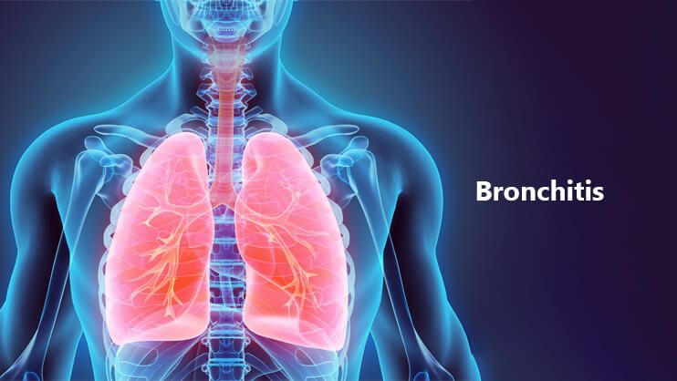

How Does Reflexology Relieve Bronchitis

Bronchitis is a respiratory condition characterized by inflammation of the bronchial tubes, leading to symptoms such as coughing, mucus production, wheezing, and shortness of breath. While conventional treatments such as medications and rest are commonly used, reflexology has emerged as a complementary therapy to aid in symptom relief. This article explores how reflexology works to alleviate bronchitis symptoms and the scientific basis supporting its effectiveness.
Understanding Reflexology and Its Role in Respiratory Health
Reflexology is a holistic therapy that involves applying pressure to specific points on the feet, hands, and ears to promote healing in corresponding organs and systems. Practitioners believe that stimulating these reflex points can improve circulation, reduce stress, and enhance overall well-being. For bronchitis relief, reflexologists target points associated with the lungs, bronchial tubes, and diaphragm.
Scientific Basis of Reflexology for Bronchitis Relief
Although reflexology is not a substitute for medical treatment, several studies indicate that it may provide respiratory benefits. Reflexology helps relieve bronchitis symptoms through the following mechanisms:
- Enhancing Lung Function
Applying pressure to lung-related reflex points can help open airways, improve oxygen exchange, and reduce breathing difficulties. A study in the Journal of Alternative and Complementary Medicine found that reflexology sessions improved lung capacity in patients with respiratory conditions.
- Reducing Inflammation
Bronchitis involves inflammation of the bronchial tubes, which leads to excessive mucus production and breathing difficulties. Reflexology has been shown to reduce stress-induced inflammation by lowering cortisol levels. By promoting relaxation, reflexology helps decrease airway inflammation and supports easier breathing.
- Improving Circulation
Proper circulation is essential for delivering oxygen and nutrients to tissues and organs, including the lungs. Reflexology stimulates blood flow, ensuring that the lungs receive adequate oxygen supply, which can accelerate healing and reduce bronchial congestion.
- Strengthening the Immune System
A strong immune system is crucial for fighting infections that cause bronchitis. Reflexology is believed to stimulate the lymphatic system, which aids in detoxification and immune response. Studies suggest that reflexology may enhance white blood cell activity, helping the body combat respiratory infections more effectively.
- Promoting Relaxation and Reducing Stress
Chronic stress weakens the immune system and exacerbates respiratory conditions. Reflexology induces deep relaxation, helping to regulate the nervous system and support immune function. A study published in Complementary Therapies in Clinical Practice found that reflexology significantly reduced anxiety and stress levels, which can contribute to respiratory health.
Reflexology Techniques for Bronchitis Relief
Reflexologists use specific techniques to target lung and respiratory reflex points. Here are some key areas that can be stimulated to relieve bronchitis symptoms:
- Lung Reflex Points
Located on the ball of the feet, lung reflex points are essential for improving respiratory function. Applying gentle pressure to this area can help open airways and reduce congestion.
- Bronchial Tube Reflex Points
These reflex points are located at the base of the toes. Stimulating them can alleviate inflammation and mucus buildup in the bronchial tubes, making it easier to breathe.
- Diaphragm and Chest Reflex Points
Located just below the ball of the feet, these points help regulate breathing patterns and promote relaxation. Massaging this area can relieve tightness in the chest and improve lung expansion.
- Lymphatic System Reflex Points
Reflex points associated with the lymphatic system are located on the top of the feet and near the ankle. Stimulating these points can enhance immune function and support detoxification, aiding in the recovery from bronchitis.
- Solar Plexus Reflex Points
The solar plexus is a key area for stress relief. Located in the center of the foot, applying pressure to this point can help calm the nervous system and promote overall relaxation, which is beneficial for respiratory health.
How to Perform Reflexology at Home for Bronchitis Relief
If professional reflexology sessions are not accessible, you can practice self-reflexology techniques at home to alleviate bronchitis symptoms. Here’s a step-by-step guide:
- Find a Comfortable Position – Sit in a relaxed position and take deep breaths before beginning.
- Warm Up the Feet – Gently massage your feet to stimulate blood flow and prepare the reflex points for treatment.
- Apply Pressure to Lung Reflex Points – Use your thumb to apply firm but gentle pressure to the ball of the feet in a circular motion for a few minutes.
- Stimulate Bronchial Reflex Points – Massage the base of the toes using a kneading technique to help clear mucus and ease breathing.
- Focus on the Diaphragm Reflex Area – Press and massage just below the ball of the foot to relax the chest and regulate breathing.
- Work on Lymphatic Reflex Points – Apply pressure near the ankles and the top of the feet to enhance immune function and detoxification.
- Relax with Solar Plexus Reflexology – Press the center of the foot with gentle, circular motions to relieve stress and promote overall well-being.
- Repeat Daily – For best results, perform reflexology for 10-15 minutes daily until symptoms improve.
Additional Natural Remedies to Complement Reflexology
While reflexology can provide relief from bronchitis symptoms, incorporating other natural remedies can further support respiratory health:
- Stay Hydrated: Drink plenty of warm fluids such as herbal teas and warm water with honey to soothe the throat and loosen mucus.
- Use Steam Therapy: Inhaling steam with essential oils like eucalyptus can help open airways and reduce congestion.
- Practice Deep Breathing Exercises: Techniques such as diaphragmatic breathing can improve lung function and oxygen intake.
- Follow a Healthy Diet: Consuming anti-inflammatory foods like ginger, turmeric, and garlic can help reduce bronchial inflammation.
- Get Plenty of Rest: Allowing the body to recover through adequate sleep and relaxation is essential for healing.
Conclusion
Reflexology is a valuable complementary therapy that may help relieve bronchitis symptoms by improving lung function, reducing inflammation, enhancing circulation, and supporting the immune system. While scientific research on reflexology’s effectiveness for bronchitis is still evolving, many individuals report significant symptom relief with regular reflexology sessions. If you’re considering reflexology for bronchitis, consult a trained reflexologist or healthcare provider to ensure it aligns with your treatment plan.